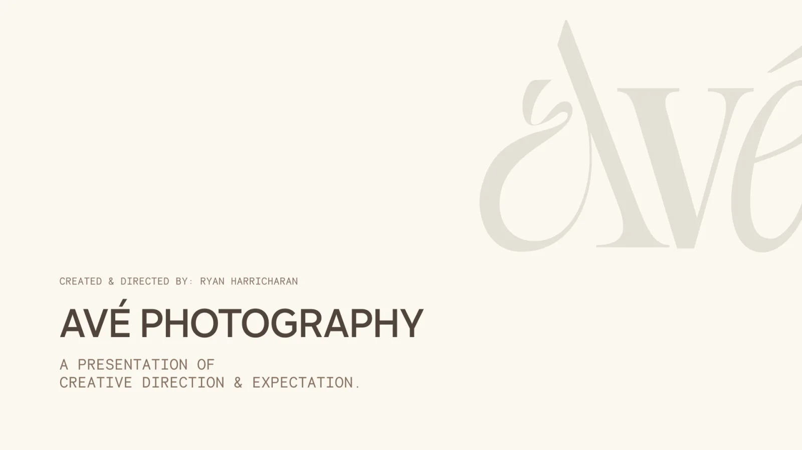
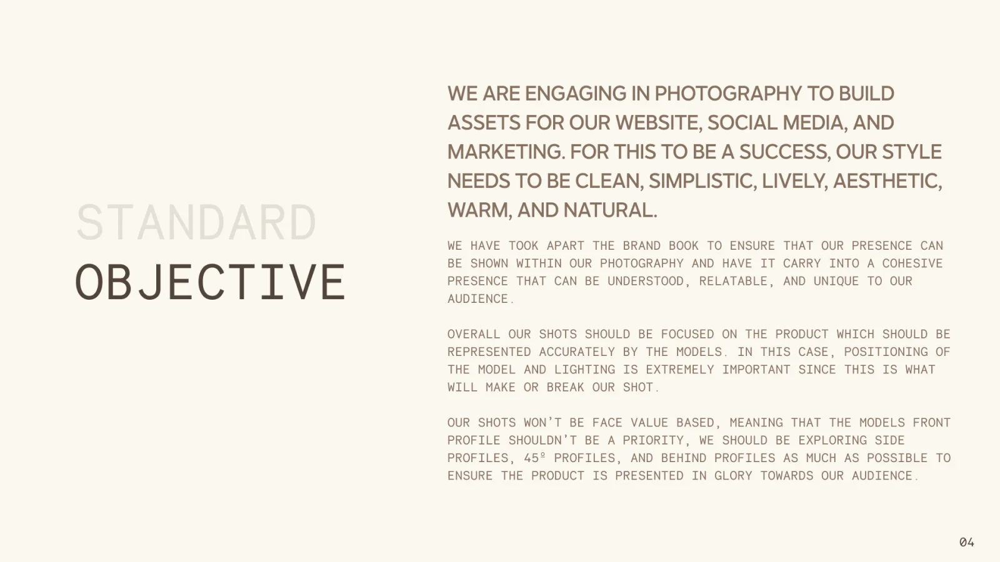
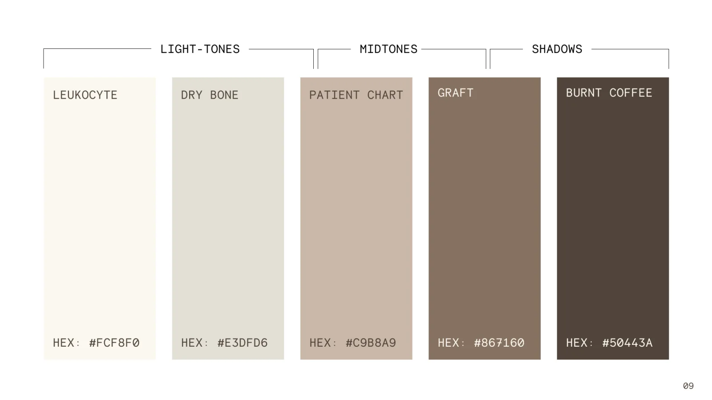
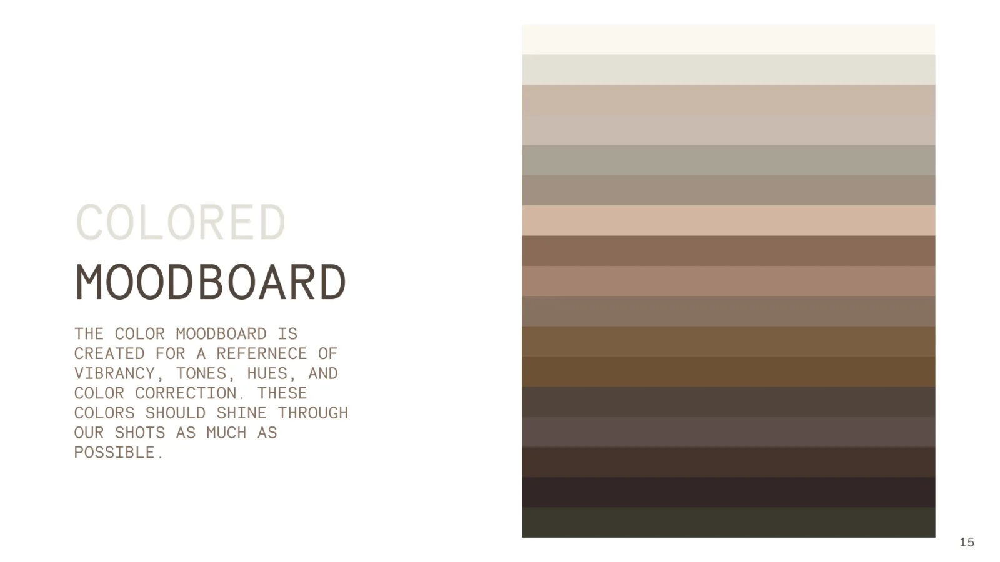
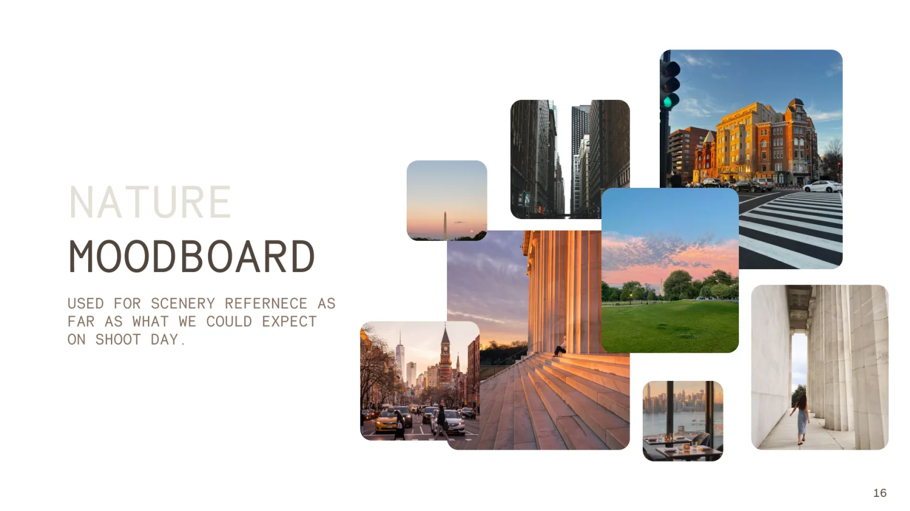
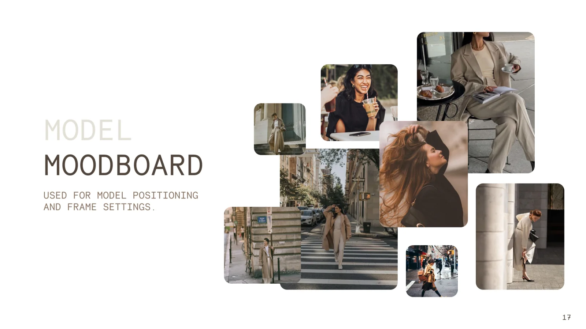

Avé. Scrub caps for the people who wear them all day.
Avé is a medical apparel and accessories brand started by a surgeon who knows what spending 10+ hours a day in scrubs feels like. Its first product is the Avé Scrub Cap: lined with mulberry silk, made to protect hair through a long shift and still look good after it.
Created and directed the photography: the creative direction deck, the palette and moodboards behind every shot, and the heavy content pieces made from them, then shaped the website around that content, so the pages and the content were designed together.
- Role
- Art and Creative Director
- Built With
- Figma, Webflow
- Worked With
- Founder
- Project
- Art Direction, Content, Website
- Year
- 2023
- in sales in year one
- $100K
- website visits a month by the end of year one
- 15K
- hospital partnerships
- 2
Direction Before the Shoot
Before anyone picked up a camera, a photography deck set the rules. The shoot had to build assets for the website, social and marketing at once, so the style had to hold everywhere: clean, simple, lively, warm and natural. The product leads every frame. Models are there to show it, which meant side, 45° and behind profiles over faces, and lighting that makes or breaks the shot.


A Palette From the Clinic
The color story borrows from the hospital it leaves behind. Five tones (Leukocyte, Dry Bone, Patient Chart, Graft and Burnt Coffee) cover the light tones, midtones and shadows, and every shot was graded to them: whites muted, mids slightly saturated, shadows lifted to soften contrast. A color moodboard set the vibrancy to aim for on the day.


Moodboards for Shoot Day
Two more boards made the day predictable. One for scenery: parks, columns, city streets and soft evening light, so locations were chosen before arrival. One for the models: positioning and framing, relaxed and candid, the product always the clearest thing in the frame.


People, Not Procedures
Medical apparel usually looks clinical: blue backgrounds, product on white, a hospital somewhere in the frame. Avé’s promise is that the people who wear scrubs are more than their job title, so the direction took them out of the hospital. Real healthcare workers, in daylight, in parks and on city streets, wearing the caps the way they would on the way in or the way home.
A New Species of Scrub Caps
The product page changes mood. It goes dark and close: macro shots of the fabric, the drawstring and the silk lining, the details a shopper can’t feel through a screen. The copy reveals itself as you read, and the cap stays one tap from Order Now the whole way down.
Sustainability, Made Tangible
Avé uses recycled, organic fabric and mulberry silk, and donates every leftover thread. Instead of another paragraph about it, the sustainability page gets a short 3D film: a feather drifts onto fabric draped over a branch, moss grows in, and the cap’s pattern blooms across the weave. Every thread matters, shown rather than said.
Decisions
- Out of the hospital. Shooting healthcare workers outdoors, off shift, says more about the brand than any product-on-white shot. It costs a little clarity about what the product is, which the product page wins back.
- The cap before the face. Side, 45° and behind profiles keep the eye on the scrub cap. Fewer classic portraits, and every frame sells the product.
- Content and pages, designed together. The art direction came first, and the site’s layouts were built for the pieces it produced: full-bleed photography on About, macro detail on the product page, the 3D film on Sustainability.
- A quiet frame for loud images. The interface stays neutral: a soft grey, small type and the script logo, so the photography and film do the talking.
- One mood per page. Warm and human on About, dark and tactile for the product, natural and slow for sustainability. Each page has one job and one mood.
Outcome
In its first year, Avé reached $100K in sales, grew to about 15K website visits a month, and signed two hospital partnerships.